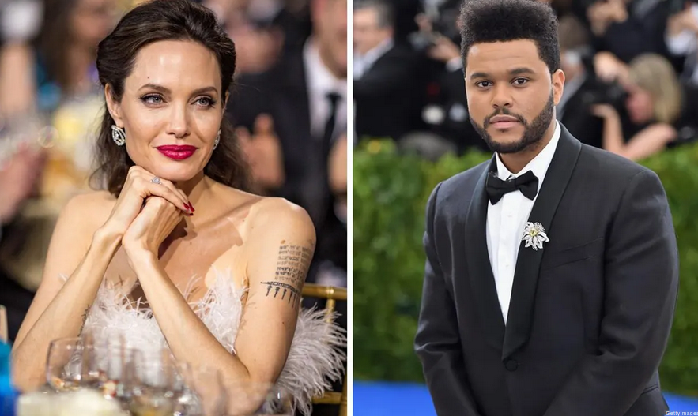

Sobre él:

Abel Makkonen Tesfaye (Toronto, Ontario; 16 de febrero de 1990), conocido artísticamente como The Weeknd, es un cantante, rapero, compositor y productor discográfico canadiense.Conocido por su versatilidad sónica y lirismo oscuro, su música explora el escapismo, el romance y la melancolía, y a menudo se inspira en experiencias personales.
Redes sociales
The Weeknd
Toronto, Ontario|16 de febrero de 1990


The Weeknd cambia de nombre en las redes sociales

The Weeknd cambia de nombre en las redes sociales, tras anunciar que iba a dar a «matar» a su alter ego. La estrella canadiense hizo este cambio en sus redes sociales ayer 15 de mayo, y ahora usa su nombre de nacimiento Abel Tesfaye, en lugar de The Weeknd.
Angelina Jolie y The Weeknd revolucionan Hollywood con su posible romance
Primero fue una cena y ahora una canción: Angelina Jolie y The Weeknd revolucionan Hollywood con su posible romance